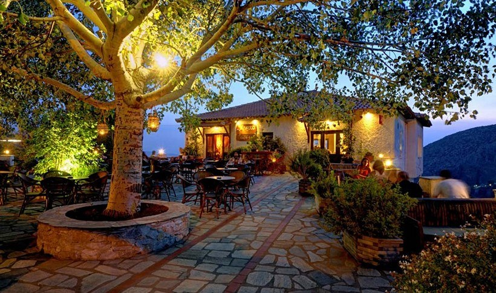

| ΚΕΝΤΡΙΚΗ ΣΕΛΙΔΑ |
Το Πήλιο είναι βουνό στο Νομό Μαγνησίας δίπλα στην πόλη του Βόλου, με ύψος 1.624 μέτρα (κορυφή Πουριανός Σταυρός). Κατά την Ελληνική μυθολογία ήταν η θερινή κατοικία των θεών και πατρίδα των Κενταύρων.
Στη σελίδα αυτή θα μάθετε πληροφορίες για:
Eκτείνεται από τα βορειοδυτικά προς τα νοτιοανατολικά με μήκος κατά προσέγγιση 44 χλμ. και πλάτος που κυμαίνεται από 10 χλμ. στο νότο μέχρι 25 χλμ. στον βορρά και σε συντεταγμένες 39,44N 23,04E. Προσεγγιστικά τα όρια του είναι νότια στο Πλατανόρεμα κοντά στο Νεοχώρι και βόρεια στο Καπόρεμα κοντά στη μονή Φλαμουρίου. Η ψηλότερη κορυφή του βρίσκεται προς τη βόρεια πλευρά του βουνού και δεν είναι επισκέψιμη λόγω ύπαρξης στρατιωτικών εγκαταστάσεων. Άλλες κορυφές είναι το Κοτρώνι 1550 μέτρα, Πλιασίδι 1547 μέτρα, Αηδονάκι 1537 μέτρα, Αγριόλευκες 1471 μέτρα, Δραμάλα 1455 μέτρα, Σχιτζουραύλι 1450 μέτρα, Γολγοθάς 1415 μέτρα, Λαγωνίκα 1300 μέτρα.
Το Πήλιο συγκεντρώνει αρκετούς επισκέπτες, τόσο τους χειμερινούς όσο και τους καλοκαιρινούς μήνες. Το χειμώνα προτιμάται από όσους επιθυμούν να απολαύσουν το πανέμορφο βουνό και τον καθαρό αέρα, το χιόνι, να κάνουν σκι, να περάσουν χρόνο στη φύση, ενώ το καλοκαίρι οι παραθεριστές απολαμβάνουν τις πανέμορφες παραλίες του Πηλίου για κολύμπι, ρακέτες, θαλάσσια σπορ, πεζοπορία, κ.λπ. Το Πήλιο παραμένει πανέμορφο όλους τους μήνες και ενδείκνυται για κάθε είδους δραστηριότητα, καθώς και για εναλλακτικό τουρισμό ή και αγροτουρισμό, ενώ παράλληλα διαθέτει τις κατάλληλες υποδομές για τη φιλοξενία μεγάλου όγκου παραθεριστών.
Οι παραλίες του Πηλίου τόσο από τη μεριά του Αιγαίου Πελάγους όσο και από τη μεριά του Παγασητικού, φημίζονται για τα καταγάλανα καθαρά νερά τους, και πολλές έχουν βραβευτεί με γαλάζια σημαία από την Ευρωπαϊκή Ένωση. Υπάρχουν παραλίες για όλα τα γούστα: ήσυχες ή κοσμικές, οργανωμένες ή μη, με αμμουδιά ή βότσαλο. Κατά κανόνα, οι παραλίες που βρίσκονται στη μεριά του Παγασητικού είναι πιο απάνεμες, πιο ζεστές και έχουν λιγότερα κύματα, σε σχέση με αυτές που βλέπουν στο Αιγαίο Πέλαγος. Ενδεικτικά αναφέρονται:
| Στη μεριά του Αιγαίου Πελάγους | Στη μεριά του Παγασητικού Κόλπου |
| Μυλοπόταμος | Μηλίνα |
| Φακίστρα | Άφησσος |
| Παππά Νερό | Καλά Νερά |
| Ποτιστικά | Πάου |
| Πάλτση | Κάλαμος |
| Πανταζή Άμμος | Λεφόκαστρο |
Το Πήλιο προσφέρει πολλές δραστηριότητες και ασχολίες για όσους το επιλέξουν σαν προορισμό. Τα γεωγραφικά του στοιχεία προσφέρουν πεζοπορίες που θα σας μείνουν αξέχαστες μαθαίνοντας παράλληλα, στοιχεία για το βουνό. Επιπλέον το χειμώνα το χιονοδρομικό κέντρο του Πηλίου είναι από τα πιο γνωστά στη χώρα μας καθώς και από τα καλύτερα για όσους θέλουν χειμερινά extreme sports. Τέλος οι παραλίες βρίσκονται αρκέτα κοντά στο βουνό και δεν παίρνει πολλή ώρα για κάποιον να φτάσει και να απολαύσει τα νερά του Παγασητικού Κόλπου ή του Αιγαίου Πελάγους.
Για περισσότερες πληροφορίες σχετικά με:
1) Τα χωριά του Πηλίου Πατήστε εδώ.
2) Το χιονοδρομικό κέντρο Πηλίου Πατήστε εδώ.
3) Αξιοθέατα του Πηλίου Πατήστε εδώ.
4) Καταλύμματα του Πηλίου Πατήστε εδώ.